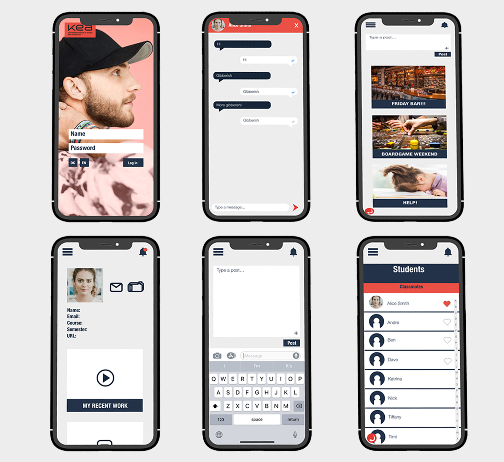

-
Day 1: Map
For the first day, we drew a map that showcase our final
solution and how we would get there. We also added notes around
to figure out the problems and how we would solve them.
-
Day 2: Sketch
For the second day, we drew sketches for our Fronter app. Each
of us would sketch our own platform and then after that we would
line all of them together and chose the best one.
-
Day 3: Decide | Storyboard
After we decided on one sketch and everyone was happy. We drew a
storyboard that would show a scenario from a student's
perspective using the new Fronter app.
-

Day 4: Prototype
I wanted to do the prototype and my team trusted me with it. I
followed the KEA design guide and inspiration from Facebook to
design this. The prototype includes everything a student would
need in KEA. It's a mobile version so students could use it with
their phones.
-
Day 5: Test
We tested our prototype with several people from Erasmus
programmes and the Danish line. They all liked our communication
feature and thought it was useful to improve student's life.
Some of them suggested to have a 'go back' function and comment
feature therefore we added that in after.